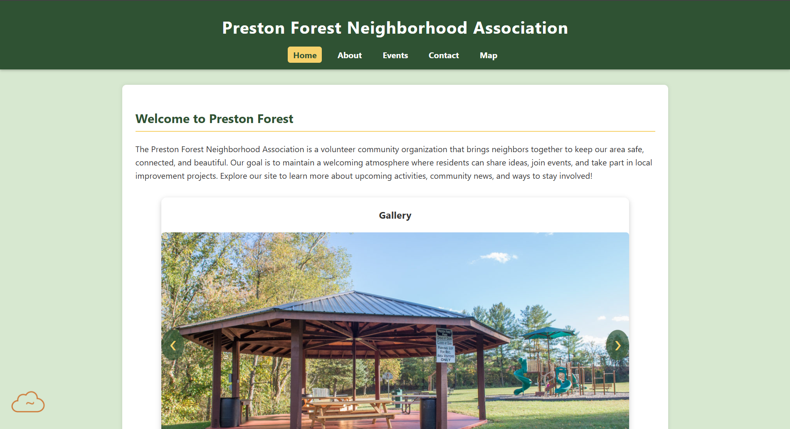

Review of: Lupi, Ryan

Visit the site
Pros
- Homepage loads clearly and the theme stays consistent across the site.
- Navigation links work correctly and move between pages smoothly.
- Text contrast is readable and spacing feels comfortable.
- Images load correctly and align well with the layout.
- Lists, headings, and paragraphs follow good formatting practices.
- Use of color is balanced and does not distract from the material.
- User flow feels smooth from the landing page to the detail pages.
- Client name, mission, and description appear in the correct location and are easy to find.
- Page passes basic structure expectations including title, header, main, and footer.
The Constructives
- Consider adding slightly more spacing in the service descriptions to help readability.
- The color palette works well but could use one additional accent color for small highlights.
- You may want to include slightly larger headings to give each section clearer separation.
- The footer could use one or two more links to strengthen navigation for visitors.
- The site feels well made so keep expanding on the personality of the company as pages grow.